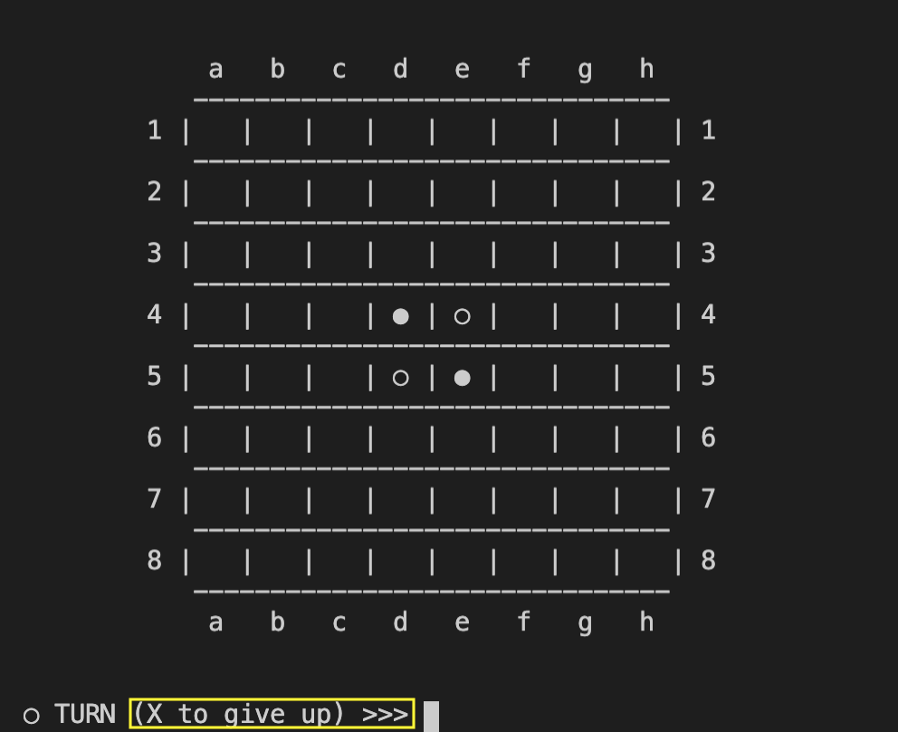

Stage 7 ゲーム進行をデザインする
7-4 入力処理を実装する
さて今回はユーザーにどのマスに石を置くか入力してもらい、それに基づいて実際に盤面を変更します。
### INPUT
print('(X to give up) >>> ', end='')
s = input()
# give up
if s in ['X', 'x']:
main_board.winner = -player
break
else:
square = IO.InputFormat(s)
logger.info('motion = {}'.format(square))
# invalid putting
if square == False:
print('INVALID INPUT')
continue
elif main_board.turn(player, *square) == FAILED:
print('INVALID PUTTING')
continue
### PLAYER CHANGE
player *= -1
main_board.BoardPrint()
では早速コーディングしましょう。
~~~~~~~~~~~~~~~
まずはユーザーに入力してもらう部分です。
### INPUT
print('(X to give up) >>> ', end='')
s = input()
print で書いてるのは下のところの黄色で囲った部分ですね。

ギブできるようにすんのか
ええ、途中で辞めたくなることだってあるでしょ？
入力内容を s という変数に入れたら、先ほど設定したギブの場合と通常の場合を分けてあげましょう。
# give up
if s in ['X', 'x']:
main_board.winner = -player
break
else:
square = IO.InputFormat(s)
logger.info('motion = {}'.format(square))
ギブを表す X については大文字でも小文字でも受け付けるようにしてあげます。この時は「相手の勝利」ということで winner を -player にしてループを抜けます。
# give up
if s in ['X', 'x']:
main_board.winner = -player
break
~~~~~~~~~~~~~~~
ギブではないときは前回コーディングした IO.py の InputFormat メソッドを使います。[row, column] の形でリターンされますから、これを square という変数に入れておいてあげましょう。
else:
square = IO.InputFormat(s)
logger.info('motion = {}'.format(square))
とはいえ、そもそも解読できなかった場合は InputFormat は FAILED をリターンしてきますから、この場合は「入力がおかしい」として continue してください。
# invalid putting
if square == False:
print('INVALID INPUT')
continue
また、解読ができても石をおくことができない場所に石をおこうとしている場合も「そこに石おけない」として continue する必要があります。
elif main_board.turn(player, *square) == FAILED:
print('INVALID PUTTING')
continue
ここで注意が必要なのですが、elif 文の中で turn メソッドを実行していますから、すでに石は置かれ裏返しも終わっている状態です。

よく考えてください。5-2 でやったことをもとにすれば、turn が最終的に SUCCEEDED を出すか FAILED を出すかは実際に石を裏返すまでわかりませんよね？
SUCCEEDED なら石裏返ってるはずだな
その通り。よってこれ以上 turn を実行する必要はありません。
石も裏返したことだし、あとは相手のターンにしてあげましょう。
### PLAYER CHANGE
player *= -1
main_board.BoardPrint()
プレーヤーを変えて盤面を表示したらおしまいです。